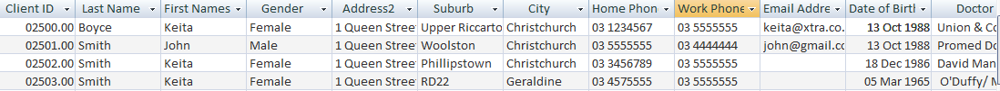

Intro
This blog is going to look at some of the main structures and Object Oriented Programming techniques used in C#. I am really just beginning to really come to terms with these things myself so let's see if I get it right and if I can give you some pointers and clarify things for myself in the process! We'll start with some definitions and end with an example from my work experience.
What is a class?
According to my reference guide, a class combines data, functions and nested types into a new type, which is a key building block of C# applications. In simple terms, classes are pretty much the place you write your computer code.
Instance and Static Members?
Data and Functions (including: fields, constants, events, methods, properties, constructors, destructors etc) can be either instance or static. By default these things will be instance members, which basically means they relate to the particular instance in which they are being used. On the other hand a 'static' member is associated with the overaching type itself.
What is a method?
All C# code executes in a method or in a special form of a method. It is basically a block of code. This block of code gets 'called' and 'executes' which just means it makes stuff happen in your programme.
How does this work?
I watched a good youtube video (https://www.youtube.com/watch?v=OBsGRqXzOhk) in which a guy called Patrick used a table analogy to describe the relationship between a static and an instance method. He explained that if the data you were working with was able to be put into a spreadsheet of rows and columns, that the columns would be the static method and the rows would be the instance methods.
This analogy works for me because a lot of what I do involves storing information in database tables.
So in the 'clients' table above, the column headers 'Client id', 'Last name', 'First names', 'Gender' etc would form part of the static method and the actual client data would be the instance of that static object. Each individual person is one instance of the the client object .
In practical coding terms that means you can not use the 'new' keyword with a static member. You use the 'new' keyword to create an instance of that static member. The static member is shared whereas the instance gets created every time it is used.
Static members are a good way of organising your code so that you don't repeat yourself heaps, they can be used as utilities.
If you use a static variable, it will share that variable with all the instances created from it. If you use a static constructor, you can effectively 'pass on' or populate the new instance with the data from the static constructor. In my example if the majority of clients were women, I could use a static constructor to pass on that data to each client instance created. Magic!